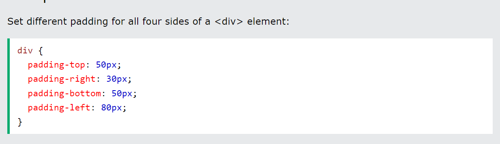

CSS Introduction
CSS is the language we use to style a Web page.
-
What is CSS?
- CSS stands for Cascading Style Sheets
- CSS describes how HTML elements are to be displayed on screen, paper, or in other media
- CSS saves a lot of work. It can control the layout of multiple web pages all at once
- External stylesheets are stored in CSS files
- CSS Demo - One HTML Page - Multiple Styles!
- Here we will show one HTML page displayed with four different stylesheets.
- Click on the "Stylesheet 1", "Stylesheet 2", "Stylesheet 3", "Stylesheet 4" links below to see the different styles:
CSS Solved a Big Problem
HTML was NEVER intended to contain tags for formatting a web page!
HTML was created to describe the content of a web page, like:
This is a heading
This is a paragraph.
- When tags like , and color attributes were added to the HTML 3.2 specification, it started a nightmare for web developers. Development of large websites, where fonts and color information were added to every single page, became a long and expensive process.
- To solve this problem, the World Wide Web Consortium (W3C) created CSS.
- CSS removed the style formatting from the HTML page!
- If you don't know what HTML is, we suggest that you read our HTML Tutorial.
- The style definitions are normally saved in external .css files.
- With an external stylesheet file, you can change the look of an entire website by changing just one file!
CSS Saves a Lot of Work!
- Colors are specified using predefined color names, or RGB, HEX, HSL, RGBA, HSLA values.
- In CSS, a color can be specified by using a predefined color name:
- Tomato
- Orange
- DodgerBlue
- MediumSeaGreen
- Gray
- SlateBlue
- Violet
- LightGray
CSS Colors
CSS Color Names
- The CSS background properties are used to add background effects for elements.
- In these chapters, you will learn about the following CSS background properties:
- The background color of a page is set like this:
CSS Backgrounds
background-color
background-image
background-repeat
background-attachment
background-position
background (shorthand property)
CSS background-color
The background-color property specifies the background color of an element.
Example

CSS Borders
- The CSS border properties allow you to specify the style, width, and color of an element's border.

CSS Border Style
- dotted - Defines a dotted border
- dashed - Defines a dashed border
- solid - Defines a solid border
- double - Defines a double border
- groove - Defines a 3D grooved border. The effect depends on the border-color value
- ridge - Defines a 3D ridged border. The effect depends on the border-color value
- inset - Defines a 3D inset border. The effect depends on the border-color value
- outset - Defines a 3D outset border. The effect depends on the border-color value
- none - Defines no border
- hidden - Defines a hidden border
- The border-style property can have from one to four values (for the top border, right border, bottom border, and the left border).
The border-style property specifies what kind of border to display.
The following values are allowed:
Example
Demonstration of the different border styles:

- Margins are used to create space around elements, outside of any defined borders.
- With CSS, you have full control over the margins.
- There are properties for setting the margin for each side of an element (top, right, bottom, and left).
- margin-top
- margin-right
- margin-bottom
- margin-left
-
All the margin properties can have the following values:
- auto - the browser calculates the margin
- length - specifies a margin in px, pt, cm, etc.
- % - specifies a margin in % of the width of the containing element
- inherit - specifies that the margin should be inherited from the parent element
CSS Margins
The CSS margin properties are used to create space around elements, outside of any defined borders.
Margin - Individual Sides
CSS has properties for specifying the margin for each side of an element:
Tip: Negative values are allowed.
Example
Set different margins for all four sides of a " p " element:

- The CSS padding properties are used to generate space around an element's content, inside of any defined borders.
- padding-top
- padding-right
- padding-bottom
- padding-left
-
All the padding properties can have the following values:
- auto - the browser calculates the margin
- length - specifies a margin in px, pt, cm, etc.
- % - specifies a margin in % of the width of the containing element
- inherit - specifies that the margin should be inherited from the parent element
CSS Padding
With CSS, you have full control over the padding. There are properties for setting the padding for each side of an element (top, right, bottom, and left).
CSS has properties for specifying the padding for each side of an element:
Tip: Negative values are allowed.
Example
Set different margins for all four sides of a " p " element:
- The height and width properties are used to set the height and width of an element.
- The height and width properties do not include padding, borders, or margins. It sets the height/width of the area inside the padding, border, and margin of the element.
- The height and width properties are used to set the height and width of an element.
-
All the padding properties can have the following values:
- auto - the browser calculates the margin
- length - specifies a margin in px, pt, cm, etc.
- % - specifies a margin in % of the width of the containing element
- inherit - specifies that the margin should be inherited from the parent element